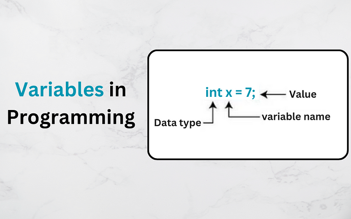

A variable is a named storage location. You can manipulate memory using the properties of this storage.
In the same way you can rent a space physically-you can rent space digitally. Using programming you can determine the size of the memory and how it operates.
When we first start programming we think variables would be a memory location which we declare. What we likely imagined or what I imagined when I first started was a pointer.
We say...
x = "hello"
And we think "x" is points to a memory address and the size of the memory just holds it. We think we could use any type of memory in the variable.
This is true. We can use pointers.
In the past this was a standard even for higher level languages. But programming has become more abstract.
Instead we have two types of variables. Variables by value and variables by pointer.
In lower level languages like C and C++ pointers are the standard for programming. But for higher level languages we are abstracted away to values.
Similar in every language (language examples)
This is similar in every language. Take a look...
// Java int x = 5; String a = "yaaas"; # Python x = 5 x: int a = "yaas" a: str // Typscript x: number = 5 a: string = "hello"
Here we say-make a storage location for x of type number and give it the value 5.
We have abstracted a named memory location to a type and a value. This is meant to make our programming easier. Pointers still exist, where the type of data is separate from the memory.
What are data types?
Each data type designates a memory size. When we declare a data type we are saying we want the variables to have certain abilities.
Numbers have different abilities than strings. Booleans have different abilities than floats. Each data type has its own.
We can determine the behavior of a data type using classes.
The whole point of classes is to create our own datatype to give it its own abilities.
Lets take a look at a simple new data type:
public class MegaString {
private string text;
public MegaString(string text) {
text = text;
}
public string Text {
get { return text; }
set { text = value; }
}
public int WordCount() {
string[] words = text.Split(new char[] { ' ', '.', ',', '!', '?' }, StringSplitOptions.RemoveEmptyEntries);
return words.Length;
}
public string Reverse() {
char[] charArray = text.ToCharArray();
Array.Reverse(charArray);
return new string(charArray);
}
public string ToTitleCase() {
return System.Globalization.CultureInfo.CurrentCulture.TextInfo.ToTitleCase(text.ToLower());
}
}
This data type wraps around a String datatype. We give it its own functionality. Read through the code real quick. Notice the naming "WordCount", "Reverse" and "ToTitleCase".
These are the extra abilities I give to a new data type called "MegaString". Now when I declare a variable as a MegaString I can call on its extra abilities...
MegaString myString = new MegaString("hello world");
Console.WriteLine("Original String: " + myString.Text);
Console.WriteLine("Word Count: " + myString.WordCount());
Console.WriteLine("Reversed String: " + myString.Reverse());
Console.WriteLine("Title Case String: " + myString.ToTitleCase());
Notice the abilities I call on the right side of the "Console.WriteLine". These are what declaring a variable does. When we say x is an integer, we give it the abilities of an integer.
When we say a is a string, we give it the abilities of a string. And when we declare the myString to be a MegaString-we are giving it the custom abilties we have created.
Initialization
Declare is an official terminology. It means to give a variable a data type. Initialization is another official terminology. It means to give a variable a value.
Here is their usage in programming...
//Declare int x; String a; float y; boolean b; //Initialize x = 5; a = "Yaaas" y = 1.5; b = true; //Declare and initialize int x = 5; String a = "Yaaas" float y = 1.5 boolean b = true;
Scoping
Let's talk about scopes. When we dedicate memory to a variable name the memory passes deeper into scoping. It goes inside scopes but it does not go out.
Here is an example of a scope...
// Global Scope
{
// Local Scope
{
// Inner Scope
}
}
Variables go in but not out. Meaning if you make a variable in global it will go to all scopes. Also remember the code is read by the compiler from the top going down.
If you make it in local it will only be in that local and its inner scope. Then if you make a variable in the inner scope-thats as far as it goes.
Here take a look...
/** Global **/
String text = "hello"
{
print(text); // Works
{
print(text); // Works
}
}
print(text); // Works
/** Local **/
{
String text = "hello"
print(text); // Works
{
print(text); // Works
}
}
print(text); // Does'nt work
/** Inner Scope **/
{
{
String text = "hello"
print(text); // Works
}
print(text); // Does'nt work
}
print(text); // Does'nt work
So global means all scopes can inherit the variable. Local means only within that scope. Inner scopes are local scopes. Outside the scope the variable no longer exists.
Primitives
Primitives are the built in data types to a language. Here is an example in Java...
- byte
- short
- int
- long
- float
- double
- char
- boolean
All of these are the most pivotal data types. They are used in all further computation in whichever language you are in. All custom data types are built off of these primitives.
Constants
When we create a variable we can give it the property of being constant. That means you cannot change the value of the variable.
For our own custom objects this means very little. We can still manipulate its inner values.
But for primitives it makes them unchangeable. Changing them gives an error.
Take a look...
/** Constants Example **/ const short myShort = 1000; const int myInt = 10000; print(myInt); // Works myInt = 7; // Error
Everything you can do with a regular variable you can do with a constant variable. You just cannot edit it.
Instances
In the above constants example notice how myInt is being used after printing it. It is independent on its own. It has its own value and represents the memory location of the constant number 10,000.
Because we are using the variable it is an instance of the variable. These instances have all the abilities of the original. They represent the original.
Naming conventions
Names of variables have great impact on the legibility of your code. There are unsaid rules to this naming that we must follow.
They are...
- Follow language rules: Each of these below are different per language. Ask or look around to see the naming rules of each language. For example C# uses title case while Java uses camel case.
- Describe well: The point of good names is for the next programmer to understand your code. Give naming a lot of thought.
- Avoid keywords: Keywords are those taken by the programming language. You cannot call a string "String". This would give a compiler error.
- Camel case: Words can be placed together with the first word lower case and the rest upper case. "thisIsACamel"
- Snake case: Words can be placed together with an underscore "this_is_a_snake".
- Title case: All words are put together with a title. "ThisIsATItle"
Vocabulary
- Primitives: The lowest level data types in programming
- Constant: Makes primitives unchangeable
- Declare: Gives a variable a name and data type
- Initialize: Gives a variable a value
- Instance: A give representation of a variable
- Pointer: A variable which uses memory location instead of being abstract.
- Scope: A block of code where we keep variables or let them go.
FAQ
How does a variable disappear out of scope?
There are two types of programming languages. Garbage collected languages and manually allocated language.
Most high level languages automatically delete variables when you leave a scope. That is a garbage collected language.
Lower level languages have you delete them yourself. That is manual allocation.
How do we know how much memory is allocated?
Primitives have set memory sizes. For example:
- boolean: Typically 1 byte
- byte: 1 byte
- char: 2 bytes in Java and C#, 1 byte in C and C++
- int: 4 bytes.
- float: 4 bytes.
- Etc...
Memory size per data type are different per language. Custom data types are automatically allocated by the language. We would have to measure the size of the data type with some type of 3rd party library.
How do I convert one data type to another?
This is known as casting. You can convert floats to integer or boolean to integer. Here are some examples:
double doubleValue = 10.5; int intValue = (int) doubleValue; int intValue = 130; byte byteValue = (byte) intValue; boolean boolValue = true; String stringValue = String.valueOf(boolValue);
Anywho, I hope you learned something...
Happy coding!